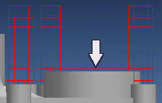
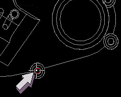
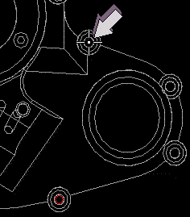
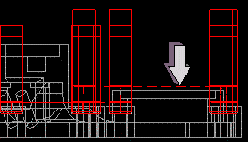

Define an avoid move
You need an avoid move that prevents the tool from colliding with the part.
-
In the Geometry view of the Operation Navigator, double-click DRILL_GEOM.
-
In the Drill Geom dialog box, in the Geometry group, click Specify Holes
 .
.
-
In the Point dialog box, click Avoid.
You will raise the tool 0.500 above the part between the start and end points as shown.

-
Watch the information in the cue line.
-
Select the hole shown as the start point.

-
Select the hole shown as the end point.

-
Click Distance.
-
In the Distance box, type 0.5.
-
Click OK to accept the distance value.
-
Click OK to return to the Point dialog box.
-
Click OK until you return to the Drill Geom dialog box.
-
Click OK to complete editing the Drill Geom object.
-
Change to a Front view.
-
In the Operation Navigator, right-click the COUNTERBORING operation and choose Generate.
Notice that NX raises the tool to avoid the part when traversing between the holes.

-
Repeat Step 14 and generate the SPOT_DRILLING and DRILLING tool paths.